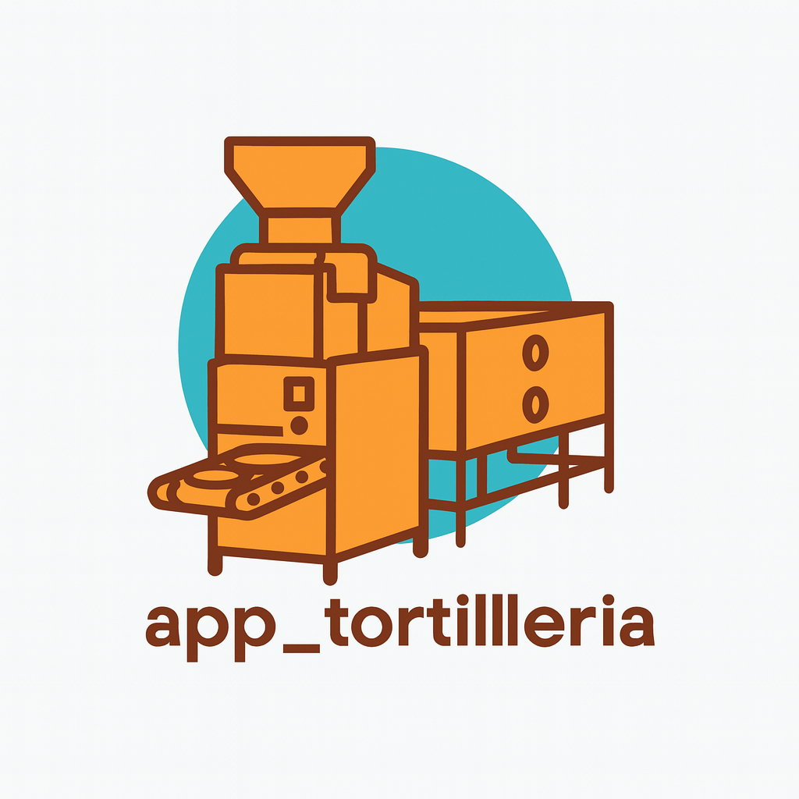

ERP Tortillería con reparto
Sistema ligero para controlar ventas, clientes y rutas de entrega. Enfoque: operación diaria sin libretas.
Qué resuelve
- Registro rápido de ventas y pedidos
- Control de clientes (direcciones / contacto)
- Organización de rutas de reparto
- Seguimiento de caja (entradas / salidas)
Stack
Flutter/Dart (app), SQLite (local). Arquitectura pensada para escalar a backend cuando el negocio lo requiera.
Screenshot
* Demo visual. El código puede estar privado por datos del cliente o por limpieza de credenciales.
Notas para reclutadores
- Enfoque en UI para operación: pocos taps, pantallas claras, flujo rápido.
- Validaciones básicas y estructura lista para crecer (módulos por pantalla).
- Si quieres revisar arquitectura/código, lo comparto por invitación o repo demo sanitizado.